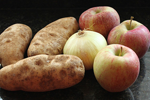
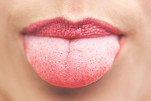

Ak budete vkuse prdieť 6 rokov a 9 mesiacov, vyprodukujete dosť plynu na vytvorenie atomovej bomby.
Jedno-hodinové trieskanie do steny spáli 150 kalórií.

Cez život vyprodukujeme toľko slín že s nimi vieme zaplniť 2 bazény
Infarkty sa stávajú častejšie v pondelky

Ak si zapcháte nos, jablko, zemiak a cibuľa by mali chutiť približne rovnako
Keď tehotná žena utrpí zranenia orgánov (napr. infarkt) plod jej poskytne kmeňové bunky, ktoré pomáhajú napraviť škody
Počet narodených dvojčiat sa od roku 1970 zvýšil o 76%
Spálite viac kalórií tým že spíte, než pozeraním telky
Nemôžete chrápať a snívať zároveň
Tak isto ako odtlačky prsto máme všetci rôzne odtlačky jazyka
